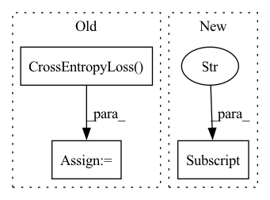

Pattern ID :19399

Before Change
self.model = BartForConditionalGeneration.from_pretrained(self.pretrained_model_path, config=self.configuration)
self.padding_token_idx = self.tokenizer.pad_token_id
self.loss = nn.CrossEntropyLoss(ignore_index=self.padding_token_idx, reduction="mean")
def generate(self, batch_data, eval_data):
source_text = batch_data["source_text"]
input_ids, attn_masks = self.tokenize_text(source_text)
After Change
self.tokenizer = BartTokenizer.from_pretrained(self.pretrained_model_path)
self.configuration = BartConfig.from_pretrained(self.pretrained_model_path)
self.model = BartForConditionalGeneration.from_pretrained(self.pretrained_model_path, config=self.configuration)
self.label_smoothing = config["label_smoothing"]
def generate(self, batch_data, eval_data):
source_text = batch_data["source_text"]
input_ids, attn_masks = self.tokenize_text(source_text)
In pattern: SUPERPATTERN
Frequency: 4
Non-data size: 3
Instances
Fragment ID: 63345671
Project Name: rucaibox/textbox
Commit Name: e0d4c2c5018ccebbe7d6a916c85741e743920116
Time: 2021-10-21
Author: 1020139164@qq.com
File Name: textbox/model/Seq2Seq/bart.py
M Class Name: BART
N Class Name: BART
M Method Name: __init__(3)
N Method Name: __init__(3)
M Parent Class: Seq2SeqGenerator
N Parent Class: Seq2SeqGenerator
M File Name: textbox/model/Seq2Seq/bart.py
N File Name: textbox/model/Seq2Seq/bart.py
M Start Line: 28
M End Line: 34
N Start Line: 31
N End Line: 31
'>
Before Change
self.model = T5ForConditionalGeneration.from_pretrained(self.pretrained_model_path, config=self.configuration)
self.padding_token_idx = self.tokenizer.pad_token_id
self.loss = nn.CrossEntropyLoss(ignore_index=self.padding_token_idx, reduction="none")
if config["task_type"] == "summarization":
self.t5_task_text = "summarize: "
elif config["task_type"] == "translation":
self.t5_task_text = "translate German to English: "
After Change
self.tokenizer = T5Tokenizer.from_pretrained(self.pretrained_model_path)
self.configuration = T5Config.from_pretrained(self.pretrained_model_path)
self.model = T5ForConditionalGeneration.from_pretrained(self.pretrained_model_path, config=self.configuration)
self.task_prefix = config["task_prefix"] if config["task_prefix"] else ""
def generate(self, batch_data, eval_data):
source_text = batch_data["source_text"]
'>
Fragment ID: 63345676
Project Name: rucaibox/textbox
Commit Name: 62b0e37edc873093b5a92c978ed23d0e304f7de2
Time: 2022-01-18
Author: wxDai2001@gmail.com
File Name: textbox/model/Seq2Seq/t5.py
M Class Name: T5
N Class Name: T5
M Method Name: __init__(3)
N Method Name: __init__(3)
M Parent Class: Seq2SeqGenerator
N Parent Class: Seq2SeqGenerator
M File Name: textbox/model/Seq2Seq/t5.py
N File Name: textbox/model/Seq2Seq/t5.py
M Start Line: 26
M End Line: 40
N Start Line: 35
N End Line: 35
'>
Before Change
if model_cfg["SMOOTHING"] > 0:
criterion = LabelSmoothingLoss(model_cfg["NUM_CLASS"], smoothing=model_cfg["SMOOTHING"])
else:
criterion = thnn.CrossEntropyLoss()
criterion = criterion.to(device)
global_step = 0
best_record = {"epoch": -1, "train loss": -1, "train acc": 0.0, "val loss": -1, "val acc": 0.0}
After Change
val_dataloader = get_dataloader(dataset_cfg, graph, val_nid, drop=False)
train_num = math.ceil(len(train_nid) / dataset_cfg["BATCH_SIZE"])
num_train_optimization_steps = (int(train_num + dataset_cfg["GRADIENT_ACCUMULATION_STEPS"] - 1)
/ dataset_cfg["GRADIENT_ACCUMULATION_STEPS"]) * dataset_cfg["EPOCHS"]
'>
Fragment ID: 63345674
Project Name: langgege-cqu/maxp_dgl
Commit Name: f1f10fccf1844722311242e00bfefcc9f4d1caf6
Time: 2021-11-21
Author: 8747734+bugczw@user.noreply.gitee.com
File Name: maxp_model_czw/train_yaml.py
M Class Name: AnonimousClass
N Class Name: AnonimousClass
M Method Name: train(6)
N Method Name: train(4)
M Parent Class:
N Parent Class:
M File Name: maxp_model_czw/train_yaml.py
N File Name: maxp_model_czw/train_yaml.py
M Start Line: 212
M End Line: 256
N Start Line: 216
N End Line: 265
'>
Before Change
else:
raise NotImplementedError("Only summarization and translation are supported.")
self.loss = nn.CrossEntropyLoss(ignore_index=self.padding_token_idx, reduction="none")
def generate(self, batch_data, eval_data):
source_text = batch_data["source_text"]
generate_corpus = []
After Change
self.configuration = GPT2Config.from_pretrained(self.pretrained_model_path, pad_token_id=self.tokenizer.pad_token_id)
self.model = GPT2LMHeadModel.from_pretrained(self.pretrained_model_path, config=self.configuration)
self.model.resize_token_embeddings(len(self.tokenizer))
self.task_prefix = config["task_prefix"] if config["task_prefix"] else ""
def generate(self, batch_data, eval_data):
source_text = batch_data["source_text"]
'>
Fragment ID: 63345675
Project Name: rucaibox/textbox
Commit Name: 81da6bb852a3637c8053ccf5f9b236dc4283fd86
Time: 2022-01-20
Author: wxDai2001@gmail.com
File Name: textbox/model/Seq2Seq/gpt2seq.py
M Class Name: GPT2Seq
N Class Name: GPT2Seq
M Method Name: __init__(3)
N Method Name: __init__(3)
M Parent Class: Seq2SeqGenerator
N Parent Class: Seq2SeqGenerator
M File Name: textbox/model/Seq2Seq/gpt2seq.py
N File Name: textbox/model/Seq2Seq/gpt2seq.py
M Start Line: 37
M End Line: 46
N Start Line: 31
N End Line: 31